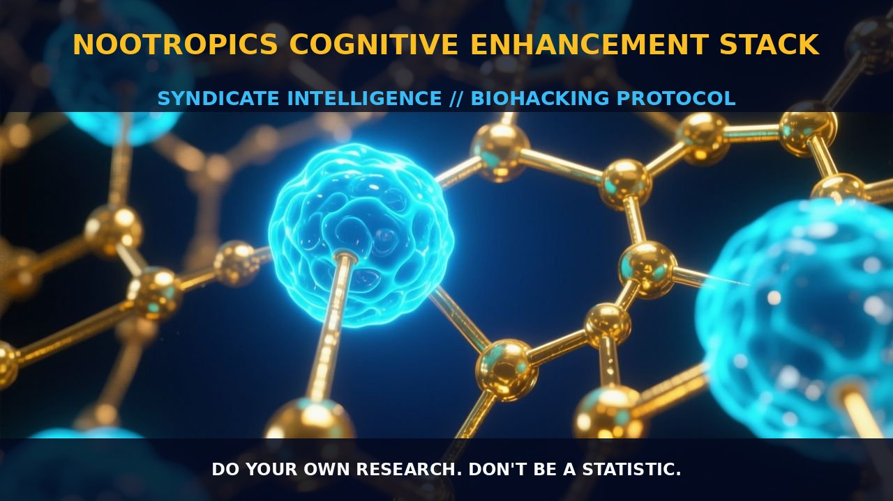

Enhancing Cognitive Function with Nootropic Stacks

1. The Mechanism
Nootropics are cognitive enhancers designed to improve brain function in various ways, including enhancing memory, increasing focus, and improving learning. These compounds typically work by modulating neurotransmitter systems, enhancing neuronal communication, and increasing blood flow to the brain.
Common nootropic compounds such as racetams, including piracetam, and choline sources like alpha-GPC, operate through different mechanisms to achieve these cognitive benefits. Racetams, for instance, are known to modulate the NMDA receptors and enhance glutamate function, which is crucial for cognitive processes like learning and memory.
Choline sources like alpha-GPC, on the other hand, provide a precursor to the neurotransmitter acetylcholine, which is critical for synaptic plasticity and cognitive function. The effectiveness of nootropics often hinges on their ability to interact with specific neurotransmitter systems. For example, piracetam has been shown to increase the sensitivity of NMDA receptors, thereby improving synaptic plasticity and cognitive function.
Additionally, nootropics can influence the cholinergic system, which is vital for attention, memory, and learning. Alpha-GPC enhances the availability of acetylcholine, a neurotransmitter that plays a pivotal role in cognitive functions. These compounds also work in concert to improve overall cognitive function, with racetams enhancing the efficiency of neurotransmitter systems while choline sources provide the necessary substrates for neurotransmitter synthesis.
2. Biological Leverage
Nootropics exert their cognitive benefits by leveraging various biological pathways within the brain. One key pathway is the modulation of NMDA receptors, which are critical for synaptic plasticity and learning. By enhancing the sensitivity of NMDA receptors, nootropics like piracetam can improve the efficiency of neural communication and enhance cognitive processes such as memory formation and recall.
Additionally, nootropics can influence the cholinergic system, which is crucial for attention, memory, and learning. Choline sources like alpha-GPC enhance the availability of acetylcholine, a neurotransmitter that plays a pivotal role in cognitive functions. Another mechanism by which nootropics exert their effects is through the enhancement of cerebral blood flow.
Improved blood flow to the brain can lead to increased delivery of oxygen and nutrients, which can support neuronal health and cognitive function. Additionally, nootropics can modulate other neurotransmitter systems such as dopamine and serotonin, which are important for mood and cognitive function. For instance, racetams have been shown to influence the release of dopamine and serotonin, contributing to improved cognitive performance and mood.
3. Tactical Implementation
To effectively implement a nootropic stack for cognitive enhancement, it is crucial to consider both the dosing and timing of the individual components. For instance, racetams like piracetam are typically taken in low-to-moderate amounts, often ranging from 400 mg to 1600 mg per day, divided into two or three doses.
Choline sources like alpha-GPC should be dosed in conjunction with racetams to ensure adequate acetylcholine synthesis, typically at a dosage of 300 mg to 600 mg per day. It is important to start with lower doses and gradually increase to avoid potential side effects such as headaches or gastrointestinal discomfort.
Timing is also an essential factor in the efficacy of nootropics. For instance, taking racetams and choline sources in the morning can help enhance cognitive performance throughout the day. Combining these nootropics with other cognitive enhancers such as caffeine or L-theanine can further boost their effects.
Additionally, stacking nootropics with adaptogens like Rhodiola rosea or Bacopa monnieri can support sustained cognitive function and reduce mental fatigue. Ultimately, the effectiveness of a nootropic stack depends on individual factors such as genetic makeup, diet, and lifestyle.
Therefore, it is crucial to personalize the stack and monitor its effects over time. By carefully selecting and timing the components of a nootropic stack, one can achieve optimal cognitive enhancement and support brain health.
Prostar Life Hack
Start with lower doses of racetams and alpha-GPC, gradually increasing to avoid potential side effects. Combine them with adaptogens like Rhodiola rosea or Bacopa monnieri for sustained cognitive function and reduced mental fatigue.
[ AUTHOR: LEAD TECHNICAL RESEARCHER ]